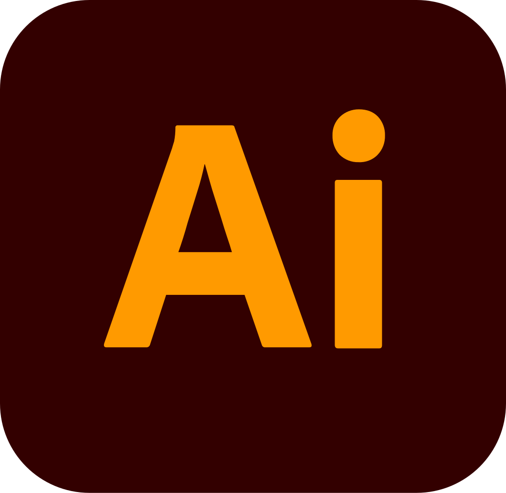
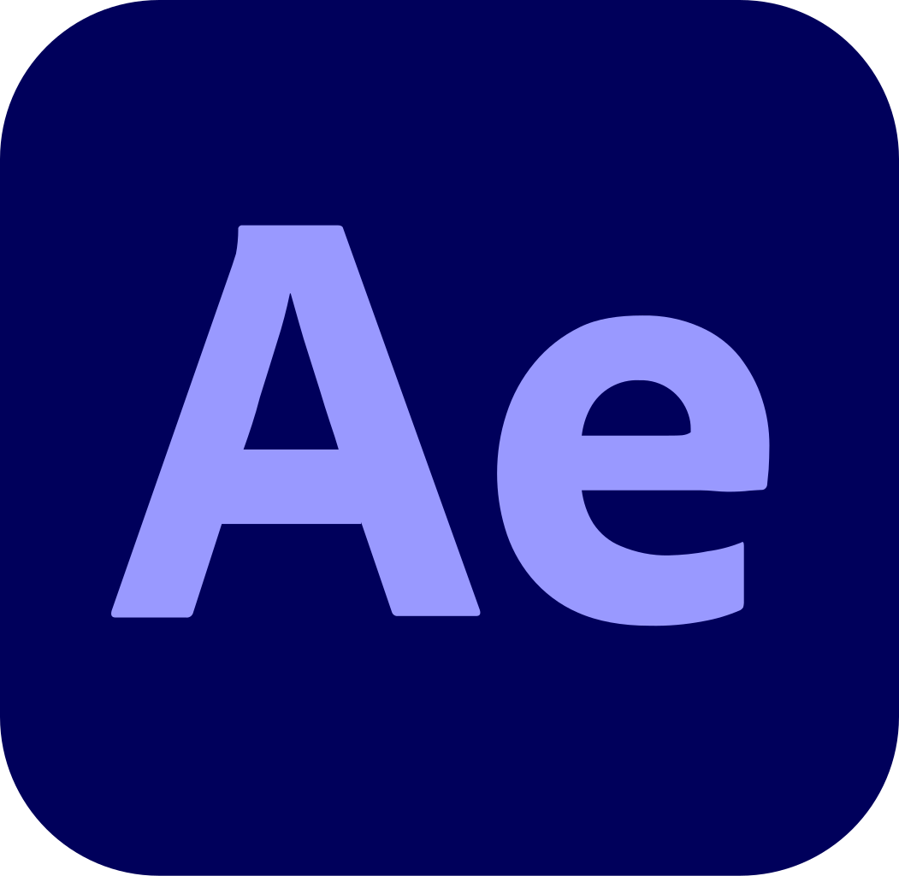
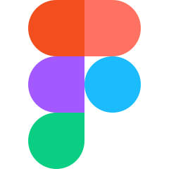
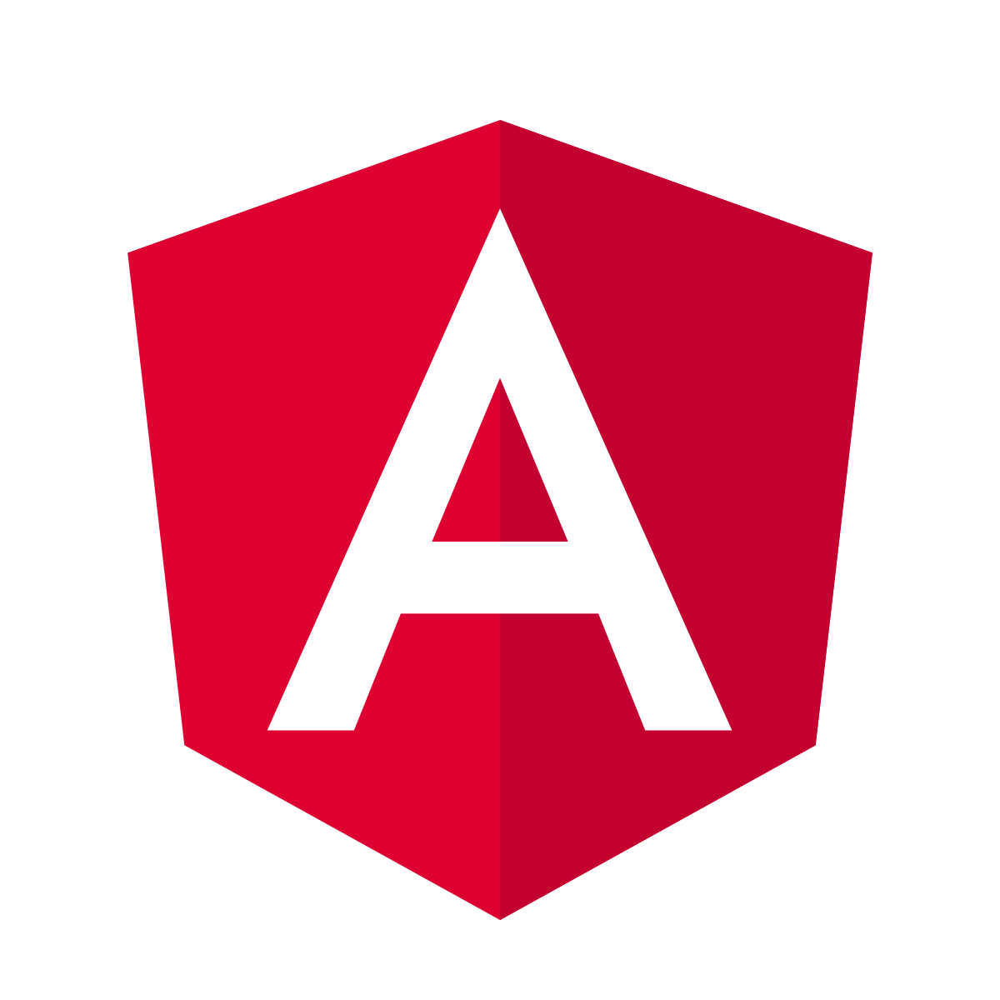
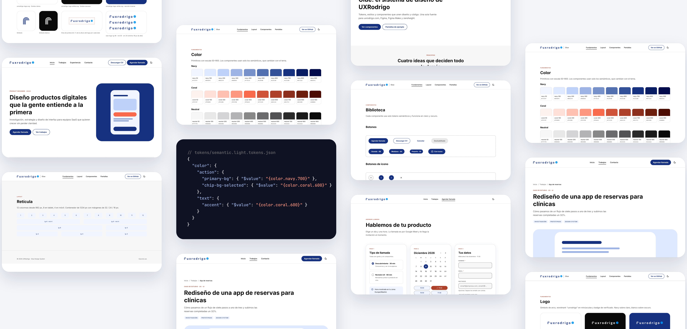

Seven chapters. One kid who could never sit still.
Diagnosed with ADHD, I ran laps and chatted while my classmates sat still. I was always in trouble for not sitting still. That school just wasn’t built for me.
At a school for hyperactive kids I played soccer, kickball and baseball, learned musical instruments, and found a natural gift for math, science and art.
To stand up to bullying, I started training mixed martial arts. Around the same time I picked up the guitar. I hyperfocused on both, and school took a back seat.
I wanted to be an MMA fighter or a guitarist, with no support for either. So I worked collections at a call center, until a friend pointed me to tech: a Cisco networking degree and a business admin bachelor’s in telecom, at the same time.
My first IT job: updating hardware and software at one of Guatemala’s largest banks. It opened the door to becoming the first employee of a SaaS, where I learned programming, web design, sales and tech support.
Working freelance as a web designer and photographer led me straight into UI/UX design and JavaScript development.
Designing and building interfaces for tech, fintech, hospitality, transportation, medical and food, for users in Guatemala, the U.S.A., Colombia and Germany.
Senior UX Developer · UX Design · Full-stack developer








